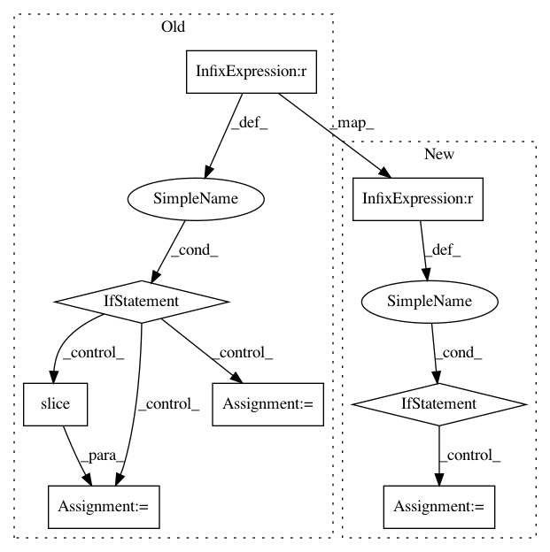

7d8c14a3b812fbd652dedb63c25c67df77661e01,pymc3/step_methods/metropolis.py,BinaryMetropolis,astep,#BinaryMetropolis#Any#Any#,218
Before Change
def astep(self, q0, logp):
if self.gibbs == "sequential":
self.index = (self.index + 1) % self.dim
elif self.gibbs == "random":
self.index = np.random.randint(0, self.dim)
else:
self.index = slice(None) // select all
mask = np.zeros(self.dim, dtype=np.bool8)
mask[self.index] = True
// Convert adaptive_scale_factor to a jump probability
After Change
def astep(self, q0, logp):
if (self.gibbs == "sequential") or (self.gibbs == "random"):
order = list(range(self.dim))
if self.gibbs == "random":
np.random.shuffle(order)
q = copy(q0)
for idx in order:
q[idx] = True - q[idx]
q = metrop_select(logp(q) - logp(q0), q, q0)
q_new = q
else:
// Convert adaptive_scale_factor to a jump probability
p_jump = 1. - .5 ** self.scaling
rand_array = random(q0.shape)
q = copy(q0)
// Locations where switches occur, according to p_jump
switch_locs = (rand_array < p_jump)
q[switch_locs] = True - q[switch_locs]
q_new = metrop_select(logp(q) - logp(q0), q, q0)
return q_new
@staticmethod
def competence(var):
In pattern: SUPERPATTERN
Frequency: 3
Non-data size: 8
Instances
Project Name: pymc-devs/pymc3
Commit Name: 7d8c14a3b812fbd652dedb63c25c67df77661e01
Time: 2016-02-16
Author: thomas.wiecki@gmail.com
File Name: pymc3/step_methods/metropolis.py
Class Name: BinaryMetropolis
Method Name: astep
Project Name: apache/incubator-mxnet
Commit Name: dd44c0c3bc168b3e88cda22c443283894fd24c54
Time: 2020-09-21
Author: lausen@amazon.com
File Name: python/mxnet/symbol/numpy/_symbol.py
Class Name: _Symbol
Method Name: __getitem__
Project Name: keras-team/keras
Commit Name: b688192cbd74495c9907b6dcfce47e9a582ae1af
Time: 2016-01-31
Author: francois.chollet@gmail.com
File Name: keras/backend/tensorflow_backend.py
Class Name:
Method Name: rnn